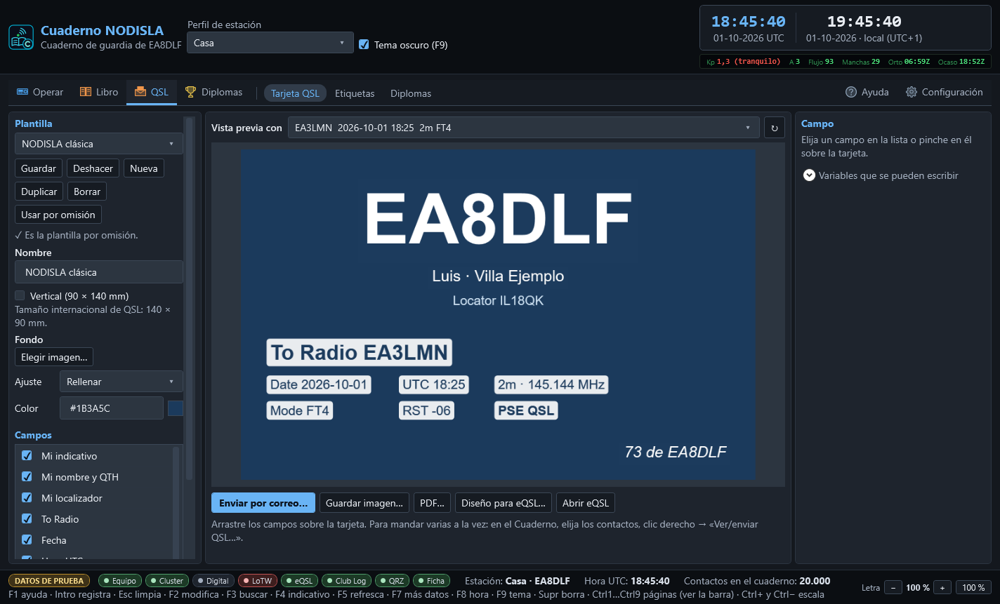
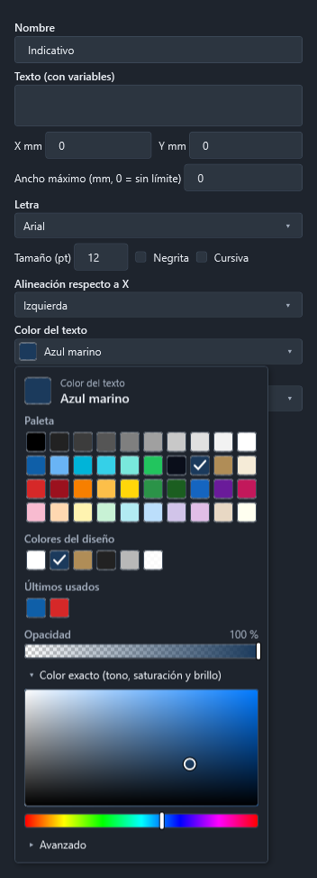

Tarjeta QSL propia: diseñarla y enviarla por correo
La página QSL › Tarjeta QSL (Ctrl 8) es el editor de su tarjeta. Desde ahí, desde el Cuaderno o desde la ficha de un contacto se genera la tarjeta de cualquier QSO como imagen (JPG/PNG) o PDF y se manda por correo al corresponsal sin salir del programa.


El editor
- Plantilla — puede tener varias (una para HF, otra para una activación…). Guardar, Deshacer (vuelve a lo guardado), Nueva, Duplicar, Borrar y Usar por omisión: la de omisión es la que sale al abrir el envío. Se guardan en la carpeta de datos del programa, en
qsl\disenos\(un JSON por plantilla y su imagen de fondo). - Tamaño — 140 × 90 mm, el internacional de QSL. Vertical la pone en 90 × 140 y recoloca los campos en proporción.
- Fondo — Elegir imagen… (JPG, PNG, BMP, GIF o TIFF: su foto, su logo). La imagen se copia a la carpeta de la plantilla, así que borrar o mover la original no deja la tarjeta sin fondo. Ajuste: Rellenar (cubre la tarjeta y recorta lo que sobre), Encajar (se ve entera; lo que falte queda del color de fondo) o Estirar. Color es el color liso de debajo; se elige en la paleta (vea Elegir un color).
- Campos — cada texto de la tarjeta: mi indicativo (grande), mi nombre y QTH, mi localizador, «To Radio», fecha, hora UTC, banda/frecuencia, modo, RST, «PSE/TNX QSL» y «73». Se mueven arrastrándolos sobre la tarjeta; para afinar, X/Y en milímetros. La casilla de la lista los enciende o apaga. Añadir texto pone uno libre.
- El campo elegido (a la derecha): texto, letra (cualquier tipografía instalada), tamaño en puntos, negrita, cursiva, alineación respecto a X (izquierda, centro, derecha), color del texto y recuadro detrás (por ejemplo un blanco casi opaco, para que se lea sobre una foto; Sin recuadro lo quita).
- Vista previa con — un contacto de verdad del cuaderno (los últimos 40), o ninguno para ver solo sus datos.
La tarjeta del centro es la imagen de verdad: la misma rutina la dibuja para el correo (200 ppp) y para el PDF (300 ppp). Lo que se ve es lo que recibe el corresponsal.
En una pantalla pequeña (1366 × 768) cabe igual: las columnas laterales se desplazan.
Elegir un color
Los colores (del texto, del recuadro, del fondo) se eligen mirando, no escribiendo códigos. El botón enseña la muestra y el nombre del color («Azul marino», «Blanco al 90 %»); al pulsarlo se despliega la paleta:


- Paleta — 40 colores: negros y grises, los de NODISLA (y el azul marino y el oro viejo de las plantillas de fábrica), colores vivos y pastel. Un clic lo elige; la ✓ marca el actual. Al pasar por encima sale su nombre.
- Colores del diseño — los que ya usa la plantilla abierta, para repetir el mismo color en otro texto sin buscarlo.
- Últimos usados — los últimos colores elegidos en esta sesión, en cualquier selector.
- Opacidad — solo donde tiene sentido (texto y recuadro): a la izquierda, transparente. Elegir otro color de la paleta conserva la opacidad que hubiera.
- Color exacto — un cuadro de saturación y brillo y una barra de tono que se arrastran, para un color que no esté en la paleta.
- Avanzado — el código (
#1B3A5C,#E6FFFFFF…), por si lo trae apuntado. Es opcional.
Con el teclado: Tab llega al botón, Espacio, Intro o Flecha abajo lo abren, las flechas recorren las muestras, Intro elige y Esc cierra sin cambiar nada. En el cuadro de color exacto y en las barras, las flechas mueven poco y Mayús + flechas, más.
Las plantillas guardan el color igual que antes, así que las de versiones anteriores abren sin cambios.
Variables
Los campos, el asunto y el texto del correo admiten variables entre llaves:
| Variable | Qué pone |
|---|---|
{miindicativo} {milocalizador} {minombre} {miqth} | Mi estación (del contacto; si no lo trae, del perfil activo) |
{miequipo} {miantena} {micq} {miitu} | Más datos de mi estación |
{indicativo} {nombre} | El corresponsal |
{fecha} {hora} | Fecha AAAA-MM-DD y hora HH:MM, en UTC |
{banda} {frecuencia} {modo} | Banda, MHz y modo |
{rst} {rstrecibido} {potencia} {satelite} | Informes, mi potencia, satélite |
{pse} | «PSE QSL», o «TNX QSL» si ya llegó la suya |
{mensaje} | El mensaje QSL del contacto |
{contactos} | Solo en el correo: la lista de todos los QSO que van en él |
Una variable mal escrita se queda tal cual, con sus llaves, para que se vea en la vista previa.
Generar la tarjeta
- Guardar imagen… — la del contacto de la vista previa, en JPG (pesa poco) o PNG.
- PDF… — para imprimir. Desde la ventana de envío, PDF… mete todas las tarjetas elegidas en hojas A4 con marcas de corte (3 apaisadas o 2 verticales por hoja). Imprimir al 100 %.
Enviar por correo
Se abre la ventana Ver/enviar QSL desde:
- el Cuaderno: elija uno o varios contactos (Ctrl/Mayús + clic), clic derecho → «Ver/enviar QSL…» o el botón Ver/enviar QSL… de arriba;
- la ficha del contacto (F2 en el Cuaderno): botón Ver/enviar QSL… junto a «Guardar cambios»;
- el editor: Enviar por correo… manda la del contacto de la vista previa.
En la ventana sale una fila por estación: si hay varios QSO con la misma, van en un solo correo con una tarjeta por contacto. La dirección se busca sola:
- la apuntada en el contacto (campo correo);
- si no hay, la de su ficha de QRZ.com (o HamQTH), si la publica;
- si no la publica, la fila queda desmarcada con el aviso «No publica correo»: escriba la dirección a mano en la columna Correo y márquela, o se saltará.
El asunto y el texto se pueden retocar para este envío (los de siempre se cambian en Configuración › Correo de las QSL). Enviar por correo manda las marcadas una a una; la columna Estado dice cómo ha ido cada una. Si falla el destinatario (buzón inexistente), se apunta y se sigue con la siguiente; si falla el servidor (contraseña, red), se para en vez de repetir el mismo error con todas. Parar detiene el lote tras el correo en curso.
Al salir cada correo, sus contactos quedan con QSL enviada (QSL_SENT=Y), fecha de envío (QSL_SDATE) y vía electrónica (QSL_SENT_VIA=E). La columna QSL del Cuaderno lo refleja en la pastilla Papel («enviada») y el ADIF exportado lo lleva. Si el contacto estaba abierto en la ficha (F2), la ficha recibe la misma marca, así que «Guardar cambios» no la borra.
Lo que hay que configurar una vez
Configuración → Correo de las QSL (ver Configuración):
- Servidor, puerto y cifrado: StartTls en el 587 (lo normal), SslDirecto en el 465, o Ninguna solo para un servidor de su red de casa.
- Gmail:
smtp.gmail.com, 587, StartTls. Hace falta una contraseña de aplicación (Cuenta de Google → Seguridad → Verificación en dos pasos → Contraseñas de aplicaciones). - Outlook/Hotmail:
smtp-mail.outlook.com, 587, StartTls.
- Gmail:
- Usuario y contraseña (se guarda cifrada con «Guardar»; no se vuelve a enseñar ni se escribe en ningún fichero ni registro).
- Remitente (su dirección) y nombre del remitente (p. ej. «EA8DLF José»).
- Asunto y texto con variables, y el formato de la tarjeta adjunta (JPG o PNG).
- Probar la conexión: conecta y se identifica sin mandar ningún correo.
La contraseña nunca viaja sin cifrar: con Ninguna y un servidor que no sea el propio equipo, el programa se niega a mandarla.
eQSL
eQSL no admite una tarjeta distinta por contacto: pinta sus tarjetas con el diseño subido a la cuenta y los datos de cada QSO encima. Subir los contactos a eQSL ya lo hace el programa (Configuración → Subidas y QRZ).
eQSL no tiene API para subir el diseño: solo se puede desde su web, con la sesión iniciada. Lo que ofrece el editor:
- Diseño para eQSL… — guarda su tarjeta en JPG sin los campos del contacto (los marcados como Dato del contacto), que es lo que eQSL espera como fondo.
- Abrir eQSL — abre la web; súbala desde su perfil, en el apartado del diseño de la tarjeta (eQSL puede pedir una aportación para usar un diseño propio; revise sus condiciones).